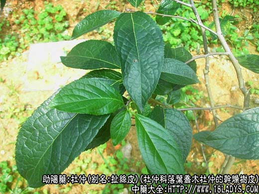
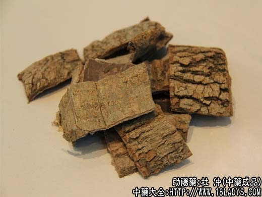
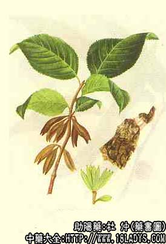

杜仲为常用中药。始载《神农本草经》，列为上品。
别名：扯丝皮、丝棉皮、思仙、思仲、木绵、石思仙、丝连皮。
来源：为杜仲科杜仲属植物落叶乔木杜仲的干燥树皮。多为栽培。
产地：主产四川、陕西、湖北、湖南、云南、河南等地。
性状鉴别：杜仲呈板片状或卷片状，长宽不一，厚2~10毫米。嫩皮薄，外表面灰色，有细纵纹及椭圆形横裂皮孔；老皮厚，外表面粗糙，已剥去粗皮的部分淡棕色，未剥去粗皮的部分褐色或灰褐色，有不规则的断续纵裂槽及横向断裂。内面平滑，暗紫褐色。质脆，易折断，断处有细密的银白色橡胶丝牵连。气微，味微苦。以皮厚、片大，去净粗皮者为佳。
主要成分：杜仲全株含桃叶珊瑚甙及一种硬性橡胶，树皮尚含树脂、鞣脂。此外，叶尚含山柰醇、咖啡酸、绿原酸、酒石酸及还原糖。种子含大量脂肪油、主要为亚油酸脂。见《全国中草药汇编》。
功效与作用：补肝肾、强筋骨、安胎等，实验证明其作用为：
1、降压。在动物实验中，有降血压作用，其效力炒杜仲胜于生杜仲，煎剂胜于酊剂。总的来说，降压作用短暂，且易耐受。
2、镇静。大剂杜仲煎剂能使试验动物安静和嗜睡。
此外，杜仲有一定镇痛作用；又似能减少大鼠肠道胆固醇的吸收。
炮制：切丝生用或盐水炒至丝断存性。
性味：甘、辛、温。
归经：入肾、肝经。
功能：补肝肾、强筋骨，安胎。
主治：筋骨痿软、腰脊四肢酸痛，肾虚尿频，胎漏，胎动不安，高血压病，头晕目眩等症。
临床应用：1、治疗腰痛，尤其肾虚腰痛，杜仲常不可少。
如属肾虚腰痛（腰痛而有体弱、足膝酸软、易眩晕、小便频数、脉细弱或虚数），以杜仲配续断、菟丝子、肉苁蓉等。
如属寒湿腰痛（腰痛而有酸胀感，痛处觉冷，遇阴寒天气加剧，苔白腻，脉沉缓），常配桂枝、独活、秦艽等。
如属外伤腰痛，可在跌打方剂内加杜仲、续断等。
如属女经期腰痛，可在四物汤基础上加杜仲、续断。
2、治肾虚胎动、胎漏、腹痛（先兆流产等），杜仲有安胎作用（可能与其镇静作用有关），常配续断、桑寄生，方如保产汤。此方疗效较好。
3、治高血压病，对肾虚型（兼有腰酸痛、两尺脉弱）较适宜。但总的来说，临床降压效果不够理想，不能作为治高血压病的特效药用。单味应用，有效率不高，常须配其他有降压作用的中草药如黄芩、夏枯草、桑寄生、牛膝等，杜仲在其中所起的作用为调整机体，矫正阳虚偏向。对肝阳上亢之高血压，杜仲往往无效。
用量：6~15g；单味治高血压用15~30g。
处方举例：保产汤：杜仲9g，川断9g，菟丝子6g，桑寄生9g，水煎服。
注：在广东、广西、湖南、云南、贵州等部分地区，以夹竹桃科植物杜仲藤及其同属红杜仲藤、毛杜仲藤的根皮作杜仲使用、称土杜仲或红杜仲。商品呈不规则的半卷筒状或小条块状、表皮棕褐色，断面棕红色，亦有软性橡胶丝牵连。气微，味微苦涩。功能祛风活络，强壮筋骨。杜仲有小毒，用量9~15g，过量可出现头晕呕吐等证状。天津草药店销，北京不销。